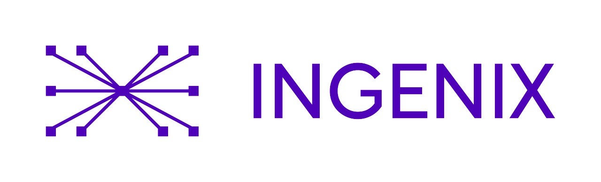
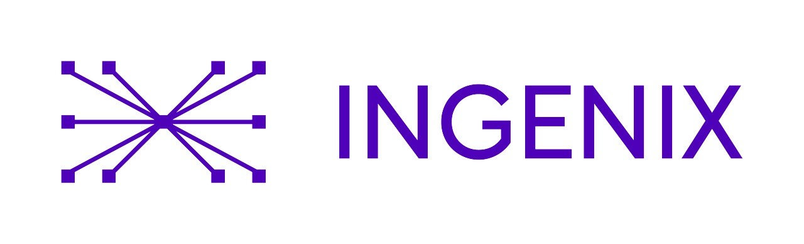

Where Computational Life Science Meets People
Waiting List🗓️ Agenda
Our Sponsors
We thank our amazing sponsors for supporting the Bioinformatics Community Meetup #4.
 

Speakers
Joanna Krawczyk
👩🔬 About the speaker: Joanna Krawczyk holds degrees in Mathematics and Bioinformatics from the Uniwersytet Warszawski. Before joining Ingenix.ai, she worked at Ryvu Therapeutics, supporting target discovery and biomarker development through CRISPR screening. As a researcher at the Ewa Szczurek Computational Medicine Lab, she studied the tumor immune microenvironment using spatial and single-cell transcriptomics in collaboration with the IMMUcan consortium.

Marc Pielies Avellí
👨🔬 About the speaker: Marc Pielies Avellí began his academic path in Physics at the University of Barcelona, later completing an MSc in Biophysics and Computational Biology at Lund University. Now in the final year of his PhD at the University of Copenhagen, in collaboration with the Broad Institute of MIT and Harvard.

Mateusz Sikora
About the speaker: To be revealed.
Diego Marques Coelho
About the speaker: To be revealed.
Krzysztof A. Kowal
About the speaker: To be revealed.
🌌 Discussion Panel
Bioinformatics Beyond Earth: Challenges and Directions in Space Exploration
As humanity looks toward the Moon and Mars, bioinformatics is finding its place among the stars. This panel will explore how computational biology, space biotechnology, and AI-driven life sciences are shaping the future of space missions — from understanding biological responses to microgravity, to developing sustainable food systems and next-generation space medicine.
Format: 60-minute moderated discussion
👩🚀 Panel Host
Łukasz Szydłowski — Chief Technology Officer at AstroFarms
Łukasz is the CTO and co-founder of AstroFarms, a startup engineering microbial consortia for extraterrestrial agriculture, enabling sustainable food production on the Moon and Mars. With a PhD in Biotechnology from the University of Cambridge and research experience at Wageningen University and OIST, he brings deep expertise in synthetic biology, microbial fuel cells, and microbiome research.
👨🚀 Panelist
Daniela Bezdan — Space Biotech Entrepreneur, Scientist
CEO of dxOmics GmbH, Chair & Founder of ISSOP, NASA GeneLab Microbe Working Group Chair, ESA Topical Team member, ESF panelist, and XPRIZE Ambassador. Bridges genomics, AI and space science with 60 publications and 14 patents.
+ 2 additional panelists to be announced soon
Want to suggest a question? Email us at contact@yourmeetup.org.
FAQ
Yes, but registration is required.
Not at all! The meetup is open to everyone — students, researchers, industry professionals, and anyone curious about bioinformatics.
We plan to share recordings with attendees after the event.
Talks will be in English, but during informal networking, all languages are welcome!
Unfortunately, there is no parking at the venue. We recommend using public transport — the best stop is “Kawiory”.
The social part will be at Kawiory Food Truck Park | Kraków.
Just yourself and your curiosity! A laptop is optional but might be useful for networking.
For this edition, the speaker lineup is complete. However, reach out if you'd like to present at future meetups!